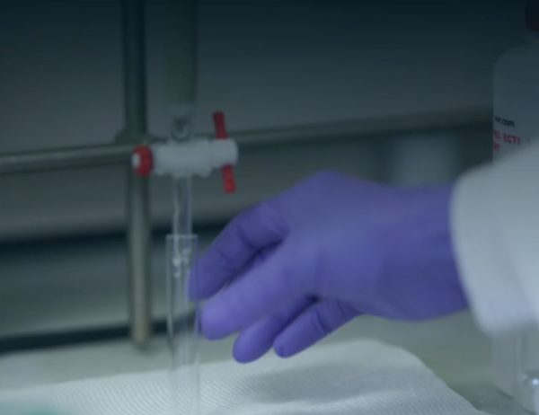
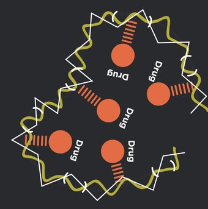

Illustrative imageThe company’s own headline (serinatx.com)
A clinical-stage biotech with a polymer designed to control the loading and release of existing drugs.
Phase 1b
SER-252, advanced Parkinson’s disease. Investigational, not FDA-approved.
8
patients in Cohort 1, lowest dose. Sep 9, 2026, per the company: an independent committee reviewed blinded safety data and recommended Cohort 2. Not proof SER-252 is safe or works.
Apomorphine attached to POZ, in a Phase 1b study (mainly safety, tolerability and drug levels) in advanced Parkinson’s disease. Investigational and not FDA-approved.
As the company describes it in its 10-K

The 10-K counts 10 or more drug copies along a POZ chain’s side chains, against 1 or 2 at the ends of a PEG chain. Not SER-252’s measured loading.
In repeat-dosing studies (10-K). PEG and POZ have not been compared in humans; the company’s comparisons are in vitro and in animals.
Six months to Jun 30, 2026 · 10-Q
$23.0M
Cash, up from $3.1M at Dec 31, 2025
$31.3M
Net cash raised selling stock and warrants
$13.3M
Net loss, six months. No product revenue
25.4M
Shares outstanding, Aug 10 (about 10.8M at Dec 31). Includes preferred conversion; excludes warrants
In its Aug 2026 10-Q the company said its cash is not expected to last twelve months from the filing, which raises substantial doubt about its ability to continue as a going concern.
Aug 21, 2026: the company may sell up to $25.0M of new shares to Roth Principal Investments, at its option, at a discount to market price and subject to limits. Sales would dilute existing holders.
SER-252 is investigational: safety and effectiveness are not established; not FDA-approved. Forward-looking: study timing and results, funding. Risks: going-concern doubt, no product revenue, dilution (equity line up to $25.0M, past at-the-market sales, warrants), control by large holders, NYSE American delisting risk. Financials: Jun 30, 2026 unless dated; unaudited. See SEC filings.